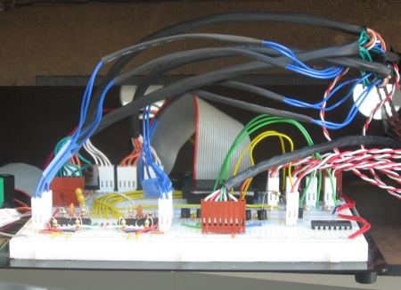
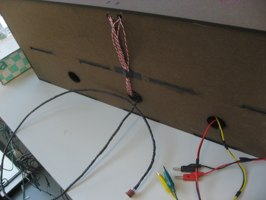
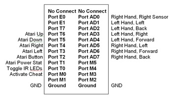

Circuits Overview
Entire proto board

External connections
The circuits for our project fell into three broad categories: atari interface, hand sensing, and user feedback. These circuits were all tied together by the C32 board. In addition, we experimented with creating feedback using an array of ultrasonic transducers, but in the end could not get it to completely work. You can see information about that attempt here.
C32 pinout
The circuits for our project fell into the three broad categories below. You can download a zip of all the DXP files here.